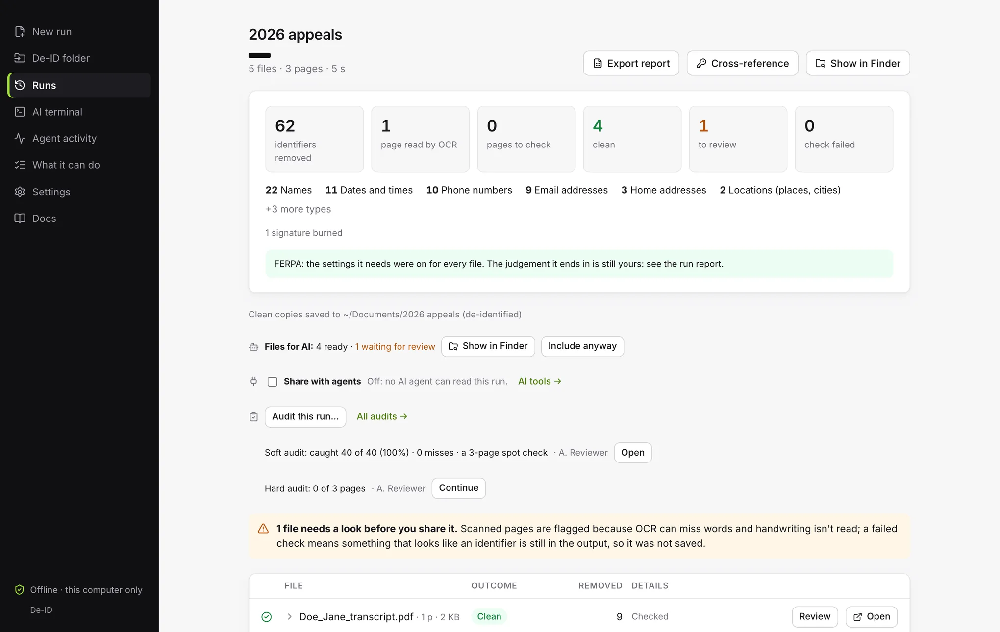
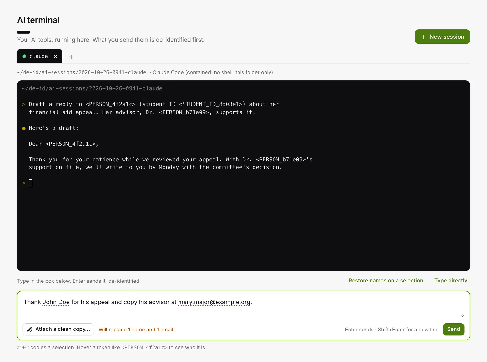
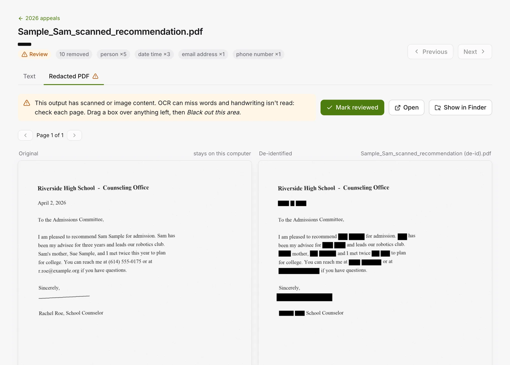
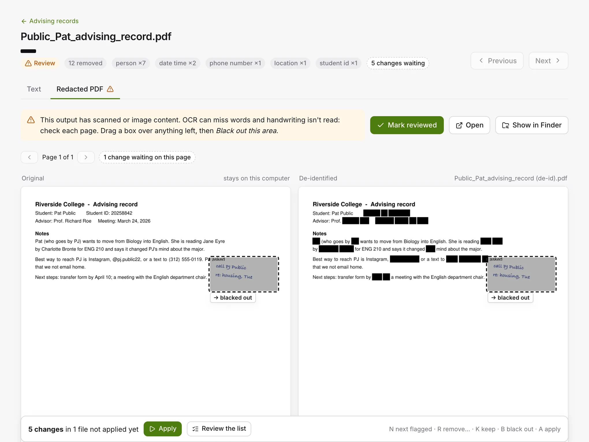
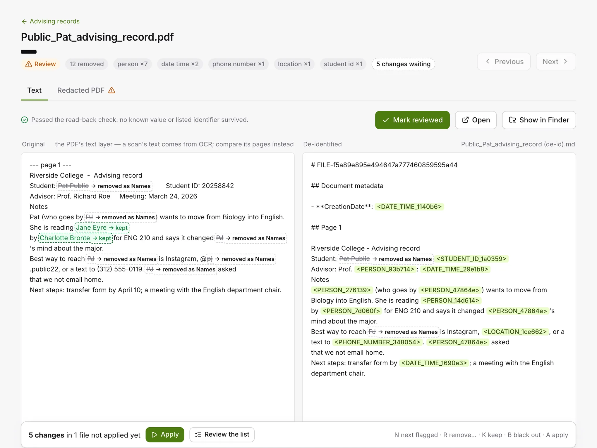
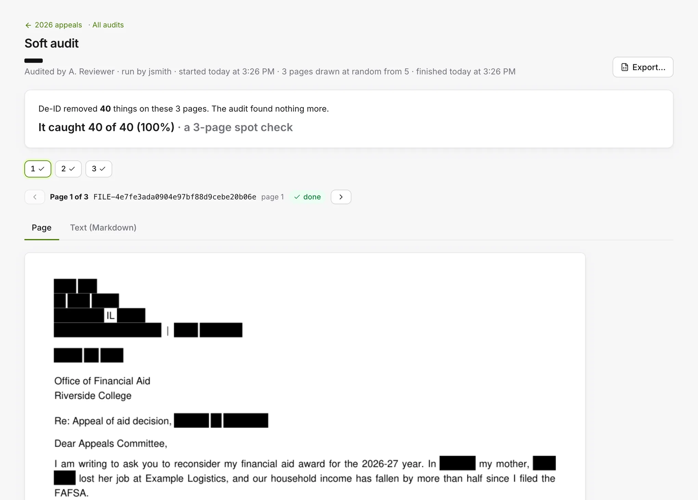
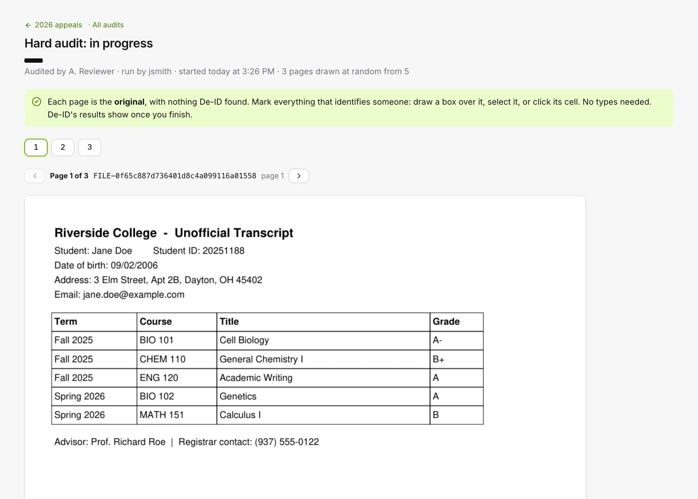

A desktop app that removes names, IDs, contact details and faces from PDFs, Word files, spreadsheets, text and photos entirely on your machine, with no account and no network. Then use any AI with the clean version: copy text de-identified into a chat and get the names back in the answer, or run Claude Code with what you type de-identified first.

PDFs (scans go through OCR), Word, Excel, CSV, Parquet, plain text, and photos (JPEG, PNG, TIFF, WebP), or paste text for a quick check. Pick labels like <PERSON> or consistent tokens, add names you already know, and choose a standard at the top of Options if a run has to stay within one.
Every output is re-read, and a file that still looks like it contains an identifier is never saved. The app points you at the pages to check and shows originals and clean copies side by side.
Missed something? Mark it to remove, in every file of the run or just this one, or drag a box over a face or a signature. Changes wait where you can see them, and one Apply processes each file once.
Clean copies land next to your originals. One switch adds a (for AI) folder with Markdown, CSV, one corpus.jsonl and a read-me that tells the model how to read the placeholders. The run report exports as Excel; the cross-reference back to the originals stays private.
Claude Code, Claude Desktop and Copilot in VS Code read the runs you share through De‑ID's own read-only tool. Originals stay out of reach, and every read is logged.
On Mac, Windows and Linux. How it works ↓
The same person gets the same token across the whole run, in the text and in the black boxes on the page. Add a list of people (a roster, a feeder report) and each person keeps one token in every file and table, and a file named after someone comes back named by their token.
De‑ID now works where the text already is: the clipboard, a terminal, a folder and your file manager. What an AI sees has the names taken out on your computer first, and what comes back can have them put back, on your screen only.
Select text anywhere, then hold ⌘ (Ctrl on Windows) and press C twice quickly. The clipboard now holds it with names, emails, phone numbers and IDs swapped for tokens, and a notification says what was replaced. Paste it into ChatGPT, Claude or any chat: the same person keeps the same token for the whole conversation, so the AI can follow along.
Copy the answer the same way and a small window shows it with the real names back and marked, after a check for a real name the AI shouldn't have had, a token from an earlier conversation, or one it made up. On Linux, both are in the tray menu: Linux doesn't let an app count copies.
Run Claude Code, Codex, Gemini CLI, OpenCode, Aider and others in a terminal inside De‑ID, signed in with their own accounts. Type in the box under the terminal: names and IDs are underlined as you type, and on Enter the tool gets the text with tokens. Pastes are cleaned too, and Attach a clean copy… hands it a file, de-identified with the same tokens.
Answers keep the tokens; hover one to see who it is, on your screen only. Claude Code runs Contained by default: no shell, no web, and only its session folder to read.
Turn it on in Settings, and anything dropped into de-id/to-deidentify, in your home folder, is cleaned with your defaults, even with the window closed. Clean copies land in de-id/deidentified (those to review in needs-review), and the originals move to done. On battery, files wait until you plug in.
Right-click files or a folder in Finder, Explorer, GNOME Files, Dolphin, Nemo or Caja → De-identify with De‑ID to clean them with your defaults, or Open With → De‑ID to choose how. Close the window and De‑ID stays in the menu bar (the notification area on Windows, the tray on Linux): runs carry on, a notification says when each ends, and Open at login starts it with just the icon.
Coming to Windows in the next release. Today's Windows download is 0.4.3. De‑ID itself connects to nothing: a chat or a command-line tool makes its own connections, as it always would, and what it gets from De‑ID is the de-identified version. Which name a token stands for stays in De‑ID's data folder for 30 days after a conversation's last use.
Four ways in, from any chat to a model on your own computer. Whichever you use, what the AI gets is the de-identified version.
Any AI chat, in a browser or an app: copy twice, paste, and copy the answer back.
Command-line AI tools, run inside De‑ID with what you type and paste cleaned first.
Agents list, read and search the runs you share, through MCP, and every read is logged. How ↓
A folder of Markdown and CSV with a read-me for the model. With a local model, nothing leaves the computer at all.

1Type here. Names, IDs and contact details become tokens before Claude Code sees them.
2Or choose Type directly to work in the tool itself. Claude Code still refuses a prompt with a name in it.
ChatGPT's desktop app can't use De‑ID's read-only tool: it connects only to tools hosted on the internet. With ChatGPT, use Copy and restore or Files for AI. Product names belong to their owners; De‑ID isn't affiliated with or endorsed by them.
A de-identification tool asks for a lot of trust, so this one tests itself, tells you where it might be wrong, and lets you check what it did.
De-identification runs entirely on your computer. De‑ID never sends your files or text anywhere, and no remote model helps decide what to remove. Before every release, Mac, Windows and Linux alike, we run the app with the network blocked, including the agents' tool, the Claude Code hook and the OCR workers as their own processes, and it ships only if nothing ever tried to connect.
The text under a black box is deleted from the PDF, not covered, so copying, searching or extracting finds nothing there. What a PDF keeps off its pages goes too: bookmarks are removed, comments and form fields are flattened into the page and redacted with it, and attachments and outside links are left out. Hidden picture data goes from every image.
The second read checks all of those places, and the report counts what came out, never what it said.
The first read finds and removes identifiers. The second goes over the clean copy looking for anything that slipped through, including the names you added. If it finds something, the file isn't saved. Scanned pages are read again at a higher resolution, and handwritten signatures are burned out. A name found on one page of a PDF is removed on every page, and text drawn sideways, mirrored or upside down is read the right way round.
No tool catches everything. A page the app couldn't read, a page with little on it beyond dates and places, and every photo are flagged so a person makes the call.
Audit this run draws pages at random for a spot check. Mark what slipped through in the clean copy, or mark the original from scratch and compare word by word. The score is counts first, and the misses become fixes in one go. See it ↓
Run the same files again and the outputs are identical, byte for byte. An auditor can re-run a job and compare; a reviewer can trust that what they signed off is what was saved.
Each run's History lists every step: who, when, which file. Find a file traces a FILE- label back to its run and original.
For a window you choose, the app watches your folders with macOS's own event log, lists every program that opened a file in them, and flags any AI agent that read an original. Then you don't have to take the tool's word for it either.
Mac only for now; Windows audits are planned.
De‑ID does the first pass. A person makes the calls it can't: it points them at the pages that need a look, waits for their fixes, and lets them spot-check its work two ways.





Real screens from De‑ID, run on made-up documents. The Audits screen adds up every audit on the computer, and each one exports to Excel.
Coding agents on your own computer are the new way sensitive documents leak. De‑ID gives Claude Code, Claude Desktop and Copilot in VS Code one read-only way in: the de-identified copies of the runs you choose to share (on a Mac or Linux, the De‑ID folder too), and nothing else. It works the same on Mac, Windows and Linux.
| An agent can | An agent can't |
|---|---|
| List the shared files: label, run, pages, whether reviewed | See a run you haven't shared |
| Read one, a page range at a time | See an original, an original file name, or a folder path |
| Search their text | Send text in to be de-identified, or get a name back |
| Reach the cross-reference, or anything but those three calls |
Settings → AI tools gives you the lines for Claude Code's settings: a rule that denies the folders holding your originals (De‑ID's own data folder is always on the list), and a hook that also stops shell commands naming them and logs reads of the clean copies. De‑ID never edits another app's settings itself.
The tool's instructions tell the model how to read the placeholders, never to guess who anyone is, and to cite FILE-<id> page N. Agent activity brings the calls, the hook's blocks and the flags together, and exports a PDF or CSV that names files only by their labels.
Why read-only: anything an agent could send in to be de-identified is already in its context. You decide what gets de-identified, in the app, and what agents may see.
Choose one or both at the top of Options. The settings the standard needs are switched on and locked for that run: the types it lists, photos and faces removed, scanned pages read.
Turns on and locks the identifier types the standard lists (for Safe Harbor, the 18, including labelled IDs such as MRN, member and policy numbers, ages over 89, ZIP codes on their own, organisations, places of birth, and vehicle and device numbers), removes photos and faces, and reads every scanned page.
Each of Safe Harbor's 18 has something looking for it, vehicle IDs and licence plates and device serial numbers included (from 0.7.9). None of the 18 is caught every time: a plate or a serial number with no label, or a name nothing points to, can still get through. So every run ends with a person's review, and the run report says which standard's settings were on and what's still to check.
"Compliant." Both standards end in a human judgement: Safe Harbor needs no actual knowledge that what's left could identify someone; FERPA needs a reasonable determination that a student can't be identified. De‑ID can say the settings were on and what review is still needed. The judgement stays yours.
Registrar, admissions and IRB offices working under FERPA can share packets and corpora, and let an AI reader at them, without sending a student identity anywhere.
Tick Common App packets and the app reads the applicant, family, counselor and teachers off each packet and removes them everywhere in it, essays and letters included.
Remove patient names, IDs, contact details and photos from records and clinical notes on the machine they already live on, with a report for your HIPAA review.
Scrub case files and privileged documents locally, so nothing leaves the firm before you've decided it should.
Records offices with a redaction backlog and a policy that keeps documents off the cloud. Faces on ID copies and signatures included.
The person who wants Claude Code on a folder of records, and the security team that wants to know exactly what it read.
Preparing document sets for local models under a data-use agreement. The (for AI) folder and the agent tool were built for exactly that.
Statements, loan files and tax forms are full of SSNs, account numbers and card numbers. Clean them locally before they go into an AI tool or out to a reviewer.
For agencies and contractors whose documents can't touch the internet. De‑ID needs no network at all, so it runs on isolated or air-gapped machines.
Staff who already paste emails and case notes into ChatGPT or Claude. Copy twice (⌘C on a Mac, Ctrl+C on Windows) and the names come out first; copy the answer the same way and they go back in. How ↑
Not from De‑ID. The app has no account, telemetry, update check or cloud service. Before we ship a release, we run a network audit on it: the app cleans a set of sample files with the network blocked, the agents' tool and the OCR workers run as their own processes, and if anything tries to connect even once, that release doesn't go out.
When you paste a de-identified copy into an AI chat, or run a tool in the AI terminal, that service gets what you give it, as it always would. De‑ID's job is to make that the version without the names.
On your computer only, in De‑ID's data folder, like the crosswalk. Copy and restore, in the sidebar, lists each conversation with its copies and restores as counts, never the text, with Forget for each. A conversation's tokens are kept for 30 days after its last use. The AI never gets a way back to a name; restoring happens on your screen.
Names; street addresses and PO boxes; email addresses and phone numbers; SSNs, ITINs and EINs, including masked ones; student and record IDs; bank, routing and card numbers; driver's licence and passport numbers; IP addresses and URLs; dates and places; citizenship; and race and ethnicity terms. A year or a term on its own ("2026", "Fall 2026") stays, as Safe Harbor allows; a date with a month or a day goes whole. You can untick any of them for a run. Labelled IDs (MRN, member, policy), ages over 89, ZIP codes on their own, organisations, places of birth, national origin terms, and vehicle and device numbers (from 0.7.9) are off unless you or a standard turn them on. Names and IDs you already know are removed wherever they appear, and a rules pack can add your institution's own ID formats. What it can do, in the app's sidebar, lists it all.
No, and you should distrust any tool that says yes. It removes what it finds, re-checks its own output, won't save a file that fails that check, points you at the pages a human should review, and lets you fix what it missed and re-run.
No tool can be; compliance is a judgement about a dataset, made by a person. De‑ID removes what the Safe Harbor list and FERPA need removed when you choose that standard, and the run report says the settings were on and what review is still needed. The judgement stays yours.
Yes, if you share the run. Claude Code, Claude Desktop and Copilot in VS Code connect to De‑ID's own tool and can list, read and search the de-identified copies of shared runs. They can't see originals, original names or paths, and every call is logged without its content.
A hook, set up from Settings → AI tools, blocks Claude Code's reads of the folders you list and logs reads of the clean copies. The hook only sees what goes through it, which is why there is also an audit: on a Mac the app can watch the folders themselves and show you every program that opened a file.
Photos inside PDFs are removed, and faces on scans (an ID or passport copy) and on photos are blacked out, using a small face detector bundled with the app: it finds that a face is there, never whose it is. Hidden picture data (GPS, camera serial, owner name, dates, embedded thumbnails) is always removed. Charts, logos and letterhead stay. Every photo is flagged for review, because a house, a car or a tattoo can identify someone too. HEIC isn't read yet; export it as JPEG.
PDF (including scans, via OCR), Word, Excel, CSV, Parquet, plain text, and JPEG, PNG, TIFF and WebP photos, or text pasted into the app. PDFs come out as redacted PDFs, clean Markdown, or both; photos come back upright as the cleaned picture plus their text. Handwriting, HEIC pictures, email files and audio aren't read, and a file attached inside a PDF is left out rather than cleaned.
Spreadsheets: every sheet of a workbook, .xlsm workbooks for their values (a macro is never run), and tables up to 100 MB, a few hundred thousand rows, in minutes. A column of IDs is replaced whole, and Review shows a table as a table.
It stays on your machine in a separate cross-reference that only leaves if you export it yourself. Shared reports and agents refer to files only by generated labels.
The Windows installer isn't signed yet, so Windows doesn't recognise who made it. SmartScreen shows "Windows protected your PC": choose More info, then Run anyway. Your browser may also say the file isn't commonly downloaded; choose Keep. On a work PC, IT may have turned Run anyway off, so ask them to allow it. The Mac version is signed and notarized, so it opens without a warning.
Yes, each in their own account on it. There's no De‑ID login: the account is the login. Each one has its own data folder, readable only by that account, its own tokens and its own copy of the app running. An account several people share isn't supported.
Yes. Add them in Settings → Your organisation, and choose whether the sidebar shows no logo, De‑ID's, yours, or both. Yours also heads the run report and the Agent activity PDF. It never goes into a de-identified file or Files for AI.
The full app, free: 0.7.8 on macOS (Apple silicon and Intel) and on Linux (Ubuntu, Debian, Fedora, RHEL and their relatives), and the earlier 0.4.3 on Windows, without the clipboard, the AI terminal, the De‑ID folder or the right-click entry. The documentation is in the app, under Docs, and works offline. In return we'd like honest feedback, especially about anything it missed, through the issue tracker or by email.
That's the whole ask. If it saves your team an afternoon of manual redaction, tell us. If it misses something, definitely tell us.
Pick your Mac's chip: Apple menu → About This Mac shows "Chip: Apple M…" or "Processor: … Intel …".
Your data lives in ~/Library/Application Support/app.deid.desktop/. Keep FileVault on.
One installer for every Windows PC, whether it has an Intel, AMD or ARM chip.
On a work PC, IT may have turned off Run anyway; ask them to allow the installer. Your data lives in %LOCALAPPDATA%\io.github.hantswilliams.deid\. Keep BitLocker on.
.deb for Ubuntu 22.04+, Debian 12+, Linux Mint 21+ and Pop!_OS 22.04+
.rpm for Fedora 36+, and RHEL, Rocky Linux and AlmaLinux 10 with EPEL
sudo apt install ./De-ID_0.7.8_amd64.deb sudo dnf install ./De-ID-0.7.8-1.x86_64.rpmIt needs sudo; on a managed PC, IT installs it. On RHEL, Rocky and Alma 10, turn on EPEL first.
Copy de-identified and Restore names are in the tray menu. Stock GNOME shows the tray icon only with the AppIndicator extension. A blank window on a PC with an NVIDIA card? Start it with WEBKIT_DISABLE_DMABUF_RENDERER=1 deid-desktop. Your data lives in ~/.local/share/app.deid.desktop/. Keep the disk encrypted (LUKS).
Either way: drop a folder in, and clean copies appear next to it in <folder> (de-identified)/. The data folder holds the cross-reference (as sensitive as your originals), run history and settings, which is why the disk should be encrypted. To update, install a newer version over the old one; your data folder is kept. Pilot builds for testing · release notes for macOS and Linux 0.7.8 and Windows 0.4.3. Checksums for each file are in the release notes.